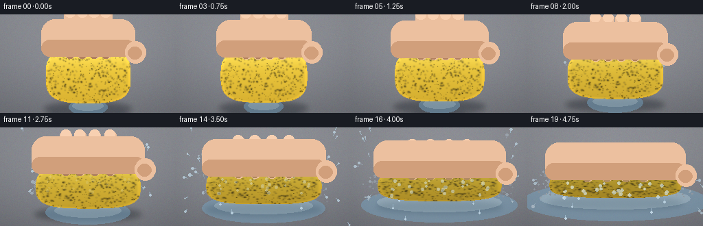
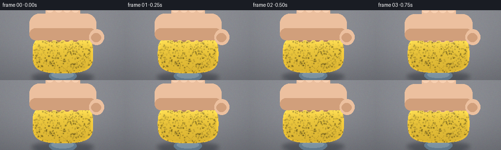

CODING AGENTS AS PIXEL WORLD MODELS
traex/Seed-2.1-Pro-0915 · phygen_011
点击播放 · 原生 RGB 像素
逐轮保存的候选
回放视频、检查图与代码变化。
每份候选均可单独播放。实际图片检查记录在下方工具轨迹中。
候选 01播放与检查图
点击播放 · 原生 RGB 像素


展开代码变化
--- 上一保存版本
+++ 本次保存版本
@@ -0,0 +1,373 @@
+"""
+Procedural text-to-video generator.
+
+Prompt: a timelapse of a water-filled sponge being forcefully squeezed by hand,
+with pressure intensifying rapidly over time.
+
+Pure numpy + PIL: draws a wet countertop, a squashing yellow sponge, a hand
+(palm + four fingers) pressing from above, water jets / drips / mist expelled
+sideways, and a puddle that grows. 20 frames at 256x144, 4 fps.
+"""
+import math
+import os
+
+import numpy as np
+from PIL import Image, ImageDraw, ImageFilter
+
+import artifact_io
+
+W, H = 256, 144
+N = 20
+SEED = 21
+
+rng = np.random.default_rng(SEED)
+
+# ---------------------------------------------------------------------------
+# Static background: countertop with a soft vignette and subtle wet sheen.
+# ---------------------------------------------------------------------------
+
+
+def make_background():
+ yy, xx = np.mgrid[0:H, 0:W].astype(np.float32)
+ # Cool grey-blue counter, slightly lighter toward the top.
+ base = 150 - (yy / H) * 26
+ img = np.empty((H, W, 3), np.float32)
+ img[..., 0] = base + 6
+ img[..., 1] = base + 8
+ img[..., 2] = base + 14
+ # Faint vignette.
+ cx, cy = W / 2, H / 2
+ vig = np.sqrt(((xx - cx) / W) ** 2 + ((yy - cy) / H) ** 2)
+ img -= (vig[..., None] * 34)
+ # Fine grain.
+ img += rng.normal(0, 2.2, img.shape)
+ return np.clip(img, 0, 255)
+
+
+BACKGROUND = make_background()
+
+# Sponge pore pattern: random dark + light specks generated in sponge-local
+# coordinates, then resampled as the sponge deforms. Fixed across frames.
+PORE_RNG = np.random.default_rng(SEED + 1)
+PORES = []
+for _ in range(520):
+ PORES.append(
+ (
+ PORE_RNG.uniform(-1, 1), # local x (-1..1)
+ PORE_RNG.uniform(-1, 1), # local y (-1..1)
+ PORE_RNG.uniform(0.6, 2.4), # radius
+ PORE_RNG.uniform(0.12, 0.5), # darkness
+ )
+ )
+
+# Water droplets emitted from the sponge sides; deterministic trajectories.
+DROP_RNG = np.random.default_rng(SEED + 2)
+DROPS = []
+for i in range(46):
+ side = -1 if i % 2 == 0 else 1
+ DROPS.append(
+ dict(
+ side=side,
+ ly=DROP_RNG.uniform(-0.7, 0.55), # local y of emission
+ t0=DROP_RNG.uniform(0.30, 0.78), # spawn time
+ vel=DROP_RNG.uniform(38, 108),
+ up=DROP_RNG.uniform(-6, 26),
+ grav=DROP_RNG.uniform(120, 210),
+ r=DROP_RNG.uniform(0.7, 1.9),
+ phase=DROP_RNG.uniform(0, math.tau),
+ )
+ )
+
+
+def pressure(t):
+ """Normalised squeeze amount, intensifying rapidly (eased curve)."""
+ p = np.clip((t - 0.04) / 0.9, 0, 1)
+ return p ** 1.7
+
+
+def sponge_geometry(p):
+ """Sponge center, half-width and half-height for pressure p in [0,1]."""
+ cx = W * 0.5
+ cy = H * 0.60
+ hw0, hh0 = 62.0, 40.0
+ hw = hw0 * (1 + 0.55 * p) # bulges outward
+ hh = hh0 * (1 - 0.52 * p) # gets squashed flat
+ cy = H * 0.62 - 6 * p
+ return cx, cy, hw, hh
+
+
+def draw_sponge(layers, p):
+ """Render the squashed porous sponge onto RGBA float layers."""
+ cx, cy, hw, hh = sponge_geometry(p)
+ img = layers["img"]
+
+ # Body via a superellipse mask (rounded rectangle) for a soft block.
+ yy, xx = np.mgrid[0:H, 0:W].astype(np.float32)
+ nx = (xx - cx) / hw
+ ny = (yy - cy) / hh
+ n_exp = 3.2
+ shape = (np.abs(nx) ** n_exp + np.abs(ny) ** n_exp) ** (1 / n_exp)
+ mask = shape <= 1.0
+ edge = np.clip((1.15 - shape) / 0.15, 0, 1)
+
+ # Base sponge yellow, darkening a touch as it compresses (wet, bruised).
+ shade = 1 - 0.25 * p
+ base = np.zeros((H, W, 3), np.float32)
+ # Vertical gradient: lighter on top.
+ vgrad = np.clip(1 - (ny + 1) / 2, 0, 1)
+ base[..., 0] = (214 + 30 * vgrad) * shade
+ base[..., 1] = (176 + 34 * vgrad) * shade
+ base[..., 2] = (52 + 18 * vgrad) * shade
+
+ # Pores: dark speckles, plus a few lighter holes.
+ dark = np.zeros((H, W), np.float32)
+ light = np.zeros((H, W), np.float32)
+ for lx, ly, r, d in PORES:
+ # Pores stretch horizontally with the deformation.
+ px = cx + lx * hw
+ py = cy + ly * hh
+ rx = r * (1 + 0.5 * p)
+ ry = r * (1 - 0.35 * p)
+ d2 = ((xx - px) / rx) ** 2 + ((yy - py) / ry) ** 2
+ spot = np.exp(-d2 * 2.2)
+ dark += spot * d
+ if r > 1.6:
+ light += np.exp(-d2 * 6.0) * 0.5
+ dark = np.clip(dark, 0, 0.62)
+ body = base * (1 - dark[..., None])
+ body += light[..., None] * 26
+
+ # Wet glossy sheen across the top half, stronger while saturated early
+ # and along the squeezed contact faces.
+ sheen = np.clip(-ny + 0.05, 0, 1) ** 2 * (0.35 - 0.12 * p)
+ body += sheen[..., None] * np.array([70, 90, 110])
+
+ a = (mask * (0.25 + 0.75 * edge) + (~mask) * 0)
+ a = np.clip(np.where(mask, np.maximum(0.55, edge + 0.45), 0), 0, 1)
+ a = np.where(mask, 1.0, 0.0)
+
+ layers["sponge_a"] = np.where(mask, 1.0, 0.0)
+ layers["sponge_box"] = (cx, cy, hw, hh)
+ img[:] = np.where(mask[..., None], body, img)
+ # Soft anti-aliased rim.
+ rim = np.clip((1.02 - shape) / 0.06, 0, 1) * np.clip(
+ (shape - 0.92) / 0.1, 0, 1
+ )
+ img += rim[..., None] * np.array([40, 28, 8])
+
+
+def draw_hand(layers, p, t):
+ """A hand pressing from the top: forearm/palm and four fingers."""
+ img = layers["img"]
+ cx, cy, hw, hh = sponge_geometry(p)
+ overlay = Image.new("RGBA", (W, H), (0, 0, 0, 0))
+ d = ImageDraw.Draw(overlay)
+
+ skin = (232, 190, 158)
+ skin_dark = (206, 158, 124)
+ skin_shadow = (176, 128, 98)
+
+ # The palm descends with pressure; fingertips end just above sponge top.
+ top_y = cy - hh - 2
+ palm_bottom = top_y + 6
+
+ # Fingers: four rounded vertical pads laid across the sponge width.
+ finger_xs = [-0.42, -0.14, 0.14, 0.42]
+ fw = 17.0
+ press = p
+ for i, fx in enumerate(finger_xs):
+ fcx = cx + fx * hw
+ # Slight splay and curl as the squeeze intensifies.
+ fcx += math.sin(t * 6 + i) * (0.6 + 1.5 * p)
+ tip = palm_bottom + 7
+ fh = 70 - 18 * press
+ ftop = tip - fh
+ x0, x1 = fcx - fw / 2, fcx + fw / 2
+ d.rounded_rectangle([x0, ftop, x1, tip + 4], radius=8, fill=skin)
+ # Knuckle shading.
+ d.rounded_rectangle(
+ [x0 + 1, ftop, x1 - 1, ftop + 14], radius=7, fill=(244, 205, 176)
+ )
+ # Finger pad shadow near the tip (contact pressure).
+ sh = int(40 * press)
+ d.rounded_rectangle(
+ [x0 + 1, tip - 12, x1 - 1, tip + 4],
+ radius=7,
+ fill=(skin_shadow[0], skin_shadow[1] + sh // 3, skin_shadow[2]),
+ )
+ # Crease lines.
+ d.line([x0 + 4, tip - 18, x1 - 4, tip - 18], fill=skin_dark, width=1)
+
+ # Palm / heel of hand behind the fingers, emerging from the top edge.
+ palm_h = 46
+ d.rounded_rectangle(
+ [cx - hw - 6, palm_bottom - palm_h, cx + hw + 6, palm_bottom + 8],
+ radius=20,
+ fill=skin,
+ )
+ # Palm shading toward the sponge (contact).
+ d.rounded_rectangle(
+ [cx - hw - 6, palm_bottom - 16, cx + hw + 6, palm_bottom + 8],
+ radius=14,
+ fill=skin_dark,
+ )
+ # Thumb nub on the right wrapping around.
+ d.ellipse(
+ [cx + hw - 8, palm_bottom - 14, cx + hw + 22, palm_bottom + 18],
+ fill=skin,
+ )
+ d.ellipse(
+ [cx + hw - 4, palm_bottom - 6, cx + hw + 16, palm_bottom + 12],
+ fill=skin_dark,
+ )
+
+ ov = np.asarray(overlay).astype(np.float32)
+ a = ov[..., 3:4] / 255.0
+ img[:] = img * (1 - a) + ov[..., :3] * a
+
+
+def draw_water(layers, p, t, fi):
+ """Puddle, expelled jets, airborne droplets and mist."""
+ img = layers["img"]
+ cx, cy, hw, hh = sponge_geometry(p)
+ overlay = Image.new("RGBA", (W, H), (0, 0, 0, 0))
+ d = ImageDraw.Draw(overlay)
+
+ water_col = (150, 200, 230)
+
+ # Growing puddle on the counter around/under the sponge.
+ puddle = np.clip((p - 0.12) / 0.85, 0, 1)
+ pw = (hw + 18) * (0.35 + 0.85 * puddle)
+ ph = 12 + 16 * puddle
+ py = cy + hh + 6
+ d.ellipse([cx - pw, py - ph, cx + pw, py + ph], fill=(120, 165, 195, 120))
+ d.ellipse(
+ [cx - pw * 0.8, py - ph * 0.7, cx + pw * 0.8, py + ph * 0.4],
+ fill=(170, 212, 235, 120),
+ )
+
+ # Side jets: arcs of small segments streaming outward.
+ intensity = np.clip((p - 0.18) / 0.6, 0, 1)
+ for drop in DROPS:
+ side = drop["side"]
+ tau = (t - drop["t0"])
+ if tau <= 0 or intensity <= 0:
+ continue
+ # Emission point on the sponge side; jets fade as water runs out late.
+ ex = cx + side * hw * 0.96
+ ey = cy + drop["ly"] * hh
+ speed = drop["vel"] * (0.4 + intensity)
+ dt = tau
+ x = ex + side * speed * dt * 1.05
+ y = ey - drop["up"] * speed * 0.25 * dt + 0.5 * drop["grav"] * dt ** 2
+ # Streak: short trailing segment toward the previous position.
+ vx = side * speed * 1.05
+ vy = -drop["up"] * speed * 0.25 + drop["grav"] * dt
+ vmag = math.hypot(vx, vy) + 1e-6
+ tail = 4.5
+ x0 = x - vx / vmag * tail
+ y0 = y - vy / vmag * tail
+ alpha = int(200 * min(1.0, tau * 6) * (1 - 0.35 * p))
+ if 0 <= x < W and -4 <= y < H and alpha > 15:
+ d.line([x0, y0, x, y], fill=(180, 218, 240, alpha), width=1)
+ d.ellipse(
+ [x - drop["r"], y - drop["r"], x + drop["r"], y + drop["r"]],
+ fill=(205, 232, 248, alpha),
+ )
+
+ # Mist / spray near the sides at peak pressure.
+ mist = np.clip((p - 0.55) / 0.4, 0, 1)
+ mrng = np.random.default_rng(SEED + 7 + fi)
+ for _ in range(int(60 * mist)):
+ side = mrng.choice([-1, 1])
+ mx = cx + side * hw + mrng.normal(0, 10)
+ my = cy + mrng.uniform(-hh, hh)
+ r = mrng.uniform(0.4, 1.3)
+ a = int(90 * mist * mrng.uniform(0.4, 1))
+ d.ellipse([mx - r, my - r, mx + r, my + r], fill=(210, 235, 250, a))
+
+ # A few drips falling straight down off the lower edges.
+ for k in range(7):
+ side = -1 if k % 2 == 0 else 1
+ ph0 = 0.35 + 0.07 * k
+ tau = t - ph0
+ if tau <= 0:
+ continue
+ dx = cx + side * hw * (0.55 + 0.1 * (k % 3))
+ dy = cy + hh * 0.7 + 140 * tau * tau
+ if dy < H - 6:
+ d.line([dx, dy - 5, dx, dy], fill=(180, 215, 240, 170), width=1)
+ d.ellipse([dx - 1.4, dy - 1.4, dx + 1.4, dy + 1.4], fill=(205, 232, 248, 200))
+
+ ov = np.asarray(overlay).astype(np.float32)
+ a = ov[..., 3:4] / 255.0
+ img[:] = img * (1 - a) + ov[..., :3] * a
+
+
+def add_contact_shadow(layers, p):
+ """Soft shadow under the sponge, tightening as it flattens."""
+ img = layers["img"]
+ cx, cy, hw, hh = sponge_geometry(p)
+ overlay = Image.new("RGBA", (W, H), (0, 0, 0, 0))
+ d = ImageDraw.Draw(overlay)
+ sy = cy + hh + 8
+ sw = hw * (1.02)
+ d.ellipse([cx - sw, sy - 9, cx + sw, sy + 10], fill=(20, 26, 34, 90))
+ overlay = overlay.filter(ImageFilter.GaussianBlur(4))
+ ov = np.asarray(overlay).astype(np.float32)
+ a = ov[..., 3:4] / 255.0
+ img[:] = img * (1 - a) + ov[..., :3] * a
+
+
+def render_frame(fi):
+ t = fi / (N - 1)
+ p = pressure(t)
+ layers = {"img": BACKGROUND.copy()}
+ add_contact_shadow(layers, p)
+ draw_water(layers, p, t, fi)
+ draw_sponge(layers, p)
+ # Water beading on the sponge surface at moderate squeeze.
+ draw_beads(layers, p, t, fi)
+ draw_hand(layers, p, t)
+ # Gentle global contrast / gamma finish.
+ img = layers["img"]
+ img = np.clip((img - 128) * 1.04 + 128, 0, 255)
+ return img.astype(np.uint8)
+
+
+def draw_beads(layers, p, t, fi):
+ """Glinting water beads that swell and run as pressure rises."""
+ cx, cy, hw, hh = sponge_geometry(p)
+ img = layers["img"]
+ overlay = Image.new("RGBA", (W, H), (0, 0, 0, 0))
+ d = ImageDraw.Draw(overlay)
+ rng2 = np.random.default_rng(SEED + 30)
+ count = 26
+ for i in range(count):
+ lx = rng2.uniform(-0.8, 0.8)
+ ly = rng2.uniform(-0.7, 0.2)
+ # Beads appear as squeezing begins and streak downward over time.
+ appear = 0.15 + rng2.uniform(0, 0.25)
+ tau = np.clip((p - appear) / (1 - appear + 1e-6), 0, 1)
+ if tau <= 0:
+ continue
+ bx = cx + lx * hw
+ by = cy + ly * hh + tau * rng2.uniform(6, 22)
+ r = rng2.uniform(0.6, 1.6) + tau
+ a = int(150 * tau)
+ d.ellipse([bx - r, by - r, bx + r, by + r], fill=(212, 236, 250, a))
+ d.ellipse([bx - r * 0.4, by - r * 0.5, bx, by], fill=(245, 252, 255, a))
+ ov = np.asarray(overlay).astype(np.float32)
+ a = ov[..., 3:4] / 255.0
+ img[:] = img * (1 - a) + ov[..., :3] * a
+
+
+def main():
+ frames = np.stack([render_frame(i) for i in range(N)], axis=0)
+ case_dir = os.path.dirname(os.path.abspath(__file__))
+ artifact_io.save(frames, case_dir)
+ print("Saved", frames.shape, "to", case_dir)
+
+
+if __name__ == "__main__":
+ main()
可观测工具轨迹
实际执行的命令与返回图片。
命令 1exit 0
/bin/bash -lc 'cat prompt.txt; echo "=====RULES====="; cat GENERATION_RULES.md; echo "=====SPEC====="; cat task_spec.json; echo "=====LS====="; ls -la'
命令 2exit 0
/bin/bash -lc 'cat artifact_io.py'
命令 3exit 0
/bin/bash -lc "cat > /dev/null << 'NOPE' NOPE echo ok"
命令 4exit 0
/bin/bash -lc 'cd "$(pwd)" && python generate.py'
命令 5exit 0
/bin/bash -lc "ls -la; echo \"---frames---\"; ls frames | head; ls frames | wc -l; python -c \"import numpy as np; z=np.load('pixels.npz')['pixels']; print('tensor',z.shape,z.dtype)\""视觉工具实际返回图片 1

保存候选 1 份；完成命令 5 次；可验证图片返回 1 张。原始 API 响应与完整日志保留在本地。